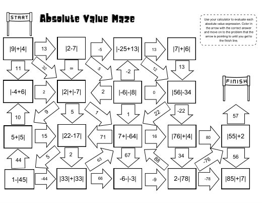
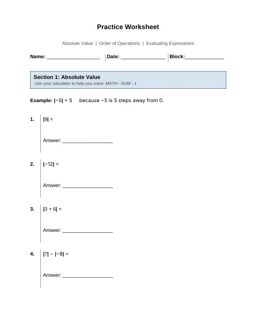
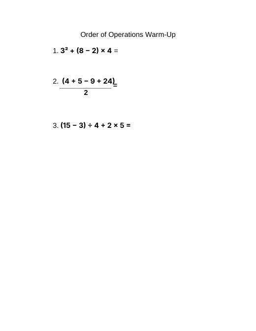

Factors, Perfect Squares & Simplifying Radicals
B3_9-14_15LessonPlan.docx
Also in: Block 3 Math/Week 3/Lesson Plans
PA Standards
- CC.2.1.HS.F.2: Apply properties of rational and irrational numbers to solve real-world or mathematical problems.
- CC.2.2.HS.D.3: Extend the knowledge of arithmetic operations and apply to polynomials.
- A1.1.1.1.2: Simplify square roots.
- A1.1.1.2.1: Find the Greatest Common Factor (GCF) and/or Least Common Multiple (LCM) for sets of monomials.
Essential Questions
- How can I use factors and perfect squares to simplify a square root?
- What does it mean to factor a number?
- How can I find the factors of a number?
- What makes a number a perfect square?
- How can identifying a perfect-square factor help me simplify a square root?
Objectives
- By the end of the lesson, students will:
- Demonstrate their understanding of previously taught skills by completing a quiz involving one-step equations, rational and irrational numbers, LCM, and GCF.
- Identify factors of a given number.
- Identify perfect-square factors of a given number.
- Use factoring to rewrite a number under a square root.
- Apply the process of factoring to begin simplifying square roots.
- Use a calculator appropriately as a support for identifying factors and checking mathematical work.
Assessment
- Completion of a quiz covering:
- One-step equations
- Rational and irrational numbers
- LCM
- GCF
- Completion of the quiz review worksheet.
- Participation in whole-group review of quiz problems.
- Responses to teacher questions during the introduction to factoring.
- Completion of guided examples on the factoring worksheet.
- Teacher observation of student ability to identify factors and perfect squares.
- Independent practice problems on the factoring worksheet.
- Teacher circulation and individual feedback during independent practice.
- The quiz will provide summative evidence of students' understanding of the previously taught material. The factoring worksheet and teacher observations will provide formative evidence of students' understanding of the new skill.
Differentiation
- instruction and assessment will be differentiated according to individual student IEP accommodations and learning needs.
- Students may receive:
- Extended time on the quiz.
- Calculator access.
- Repeated or clarified directions.
- Directions broken into smaller steps.
- Additional processing time.
- Teacher prompting.
- Individualized assistance.
- Additional guided examples.
- Re-teaching when needed.
- Reduced distractions.
- Preferential seating as appropriate.
- Visual schedule.
- Frequent checks for understanding.
- Students who finish their quiz before their peers will work ahead on their assigned DeltaMath activities rather than having unstructured wait time.
- During the factoring lesson, students who demonstrate understanding quickly will move into independent practice, while students requiring additional support will receive more teacher modeling and guided practice.
Classroom Environment & Routines
- Students will enter the classroom and refer to the visual schedule posted on the board. The visual schedule will help students understand the sequence of activities and prepare for the transition from the quiz to lunch and then back to instruction.
- The schedule will include:
- Quiz Review
- Review Answers
- Quiz
- Lunch
- Finish Quiz/DeltaMath
- Factoring & Simplifying Square Roots
- Guided Practice
- Independent Practice
- At the beginning of class, the teacher will briefly review the schedule and explain expectations.
- During the quiz, students will work independently and maintain an appropriately quiet testing environment. Students who finish early will transition to DeltaMath.
- After lunch, students who need additional time will finish the quiz while students who have already completed the assessment work independently on DeltaMath.
- During the factoring lesson, students will be expected to participate, attempt problems, ask questions, and use their calculators and other available resources appropriately.
- The teacher will maintain a supportive environment where students feel comfortable asking questions and making mistakes as part of the learning process.
Activating Prior Knowledge
- The first 45 minutes of class will activate students' prior knowledge by reviewing the concepts that will appear on their quiz.
- 0–5 minutes – Arrival and Visual Schedule
- Students enter the classroom.
- Students look at the visual schedule on the board.
- Teacher briefly explains the day's schedule and expectations.
- Students gather their quiz review worksheet and materials.
- 5–25 minutes – Quiz Review
- Students complete a practice worksheet that closely resembles the quiz.
- The teacher circulates and monitors student work.
- Students may ask questions about problems they do not understand.
- Teacher provides clarification and prompts without simply providing answers.
- 25–40 minutes – Review Answers Together
- Teacher goes through the practice worksheet with students.
- Students share answers and explain their thinking when appropriate.
- Teacher addresses common errors and misconceptions.
- Students correct their work.
- Teacher reminds students of strategies they can use during the quiz.
- 40–45 minutes – Quiz Directions/Transition
- Teacher explains quiz expectations and directions.
- Students prepare their workspace.
- Teacher reminds students to carefully read each question and show their work when appropriate.
Materials Needed
- Visual schedule
- Quiz review worksheet
- Quiz
- Factoring/simplifying square roots worksheet
- Pencils
- Calculators
- Student notebooks/paper
- Computers/Chromebooks
- DeltaMath
- Board/projector for modeling
Vocabulary
- Perfect square
- Square root
- Radical
- Simplify
Lesson Sequence
- Sequence of the Lesson
- First 45 Minutes – Review and Quiz
- 0–5 minutes
- Students enter and review the visual schedule.
- Teacher reviews the plan for the day.
- Students prepare their materials.
- 5–25 minutes
- Students complete the quiz review worksheet.
- Teacher circulates and provides support.
- Students ask questions about problems they are unsure about.
- 25–40 minutes
- Teacher and students review the worksheet together.
- Students check and correct their answers.
- Teacher provides additional explanation for concepts students are struggling with.
- 40–45 minutes
- Teacher explains quiz directions and expectations.
- Students begin the quiz.
- 30-Minute Lunch
- Students transition to lunch.
- Final 45 Minutes – Quiz Completion and New Instruction
- 0–15 minutes after lunch – Finish Quiz/DeltaMath
- Students who did not finish the quiz receive additional time to complete it.
- Students who have completed the quiz begin working ahead on their DeltaMath assignment.
- Teacher monitors both groups and provides appropriate support.
- 15–20 minutes – Introduction to New Learning
- Once students have completed the quiz, the teacher introduces the new skill.
- Teacher states:
- “Today we are going to learn how factoring can help us simplify square roots.”
- Teacher reviews the meaning of a factor and connects the new skill to students' previous knowledge of GCF and factors.
- The teacher introduces the idea of a perfect square and reviews familiar examples such as 4, 9, 16, 25, and 36.
- 20–30 minutes – Teacher Modeling
- Teacher models the factoring process step-by-step.
- Students will learn to:
- Look at the number underneath the radical.
- Find factors of that number.
- Look for a factor that is a perfect square.
- Rewrite the number using the perfect-square factor.
- Take the square root of the perfect square.
- Leave the remaining factor under the radical.
- The teacher will also demonstrate how students can use their calculators as a support for finding factors and checking their work.
- 30–40 minutes – Guided Practice
- Students receive the factoring worksheet.
- Teacher completes examples with students.
- Students work through each step with the teacher.
- Teacher asks questions such as:
- “What are the factors of this number?”
- “Which factor is a perfect square?”
- “What happens when we take the square root of that perfect square?”
- “What number stays underneath the radical?”
- The teacher will continue with additional examples until students demonstrate sufficient understanding to attempt problems independently.
- 40–45 minutes – Independent Practice
- Students begin completing the factoring problems independently.
- Teacher circulates and provides individualized assistance.
- Students who demonstrate understanding continue independently.
- Students who need additional support work with the teacher.
Closure
- To close the lesson, the teacher will bring the class back together and review the main steps for simplifying square roots through factoring.
- Students will be asked to explain or identify:
- What a factor is.
- What a perfect square is.
- Why we look for a perfect-square factor.
- What happens to the perfect square when simplifying the square root.
- The teacher will review the student-friendly objective:
- “I can use factors and perfect squares to help me simplify square roots.”
- Students will complete or begin the remaining independent practice problems. Their work will help the teacher determine whether additional instruction on factoring and perfect squares is needed before moving further into simplifying square roots.
Show the original document here
Materials from the same week



